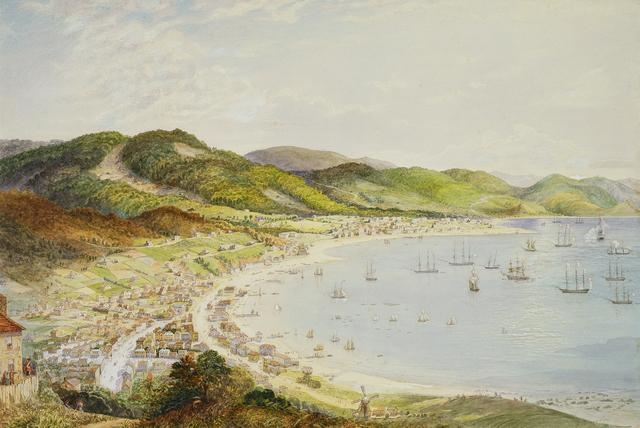

2015-01-09
亞洲各國的CC推動團隊，為了加強彼此的連結，決定透過部落格來呈現各國的現況，以加強相互間的瞭解與交流學習。首先由來自紐西蘭的Matt McGregor分享，讓我們先來看看紐西蘭的狀況吧！
（本文編譯自The Commons in Aotearoa showcased on NZCommons.org.nz, by Matt McGregor.)

2014對紐西蘭公領域（the commons）來說是忙碌的一年，經過一些年的緩慢成長，許多紐西蘭的公家機構開始採取開放政策。
透過一個NZCommons.org.nz 入口網站的建立，專門來探討開放紐西蘭文化與知識之近用跟再利會遇到的機會跟挑戰，聚焦在著作權、授權跟公眾領域，這網站的主軸在促成各紐西蘭開放團體間 的交流，並相互激勵，以避免單打獨鬥，重複作工。網站提供相關新聞、個案研究，和一系列紐西蘭人的作品，去增長對公領域支持、鼓勵橫跨紐西蘭全國個人或組 織，採用創用CC授權他們的作品。
關於創用CC政策已在紐西蘭學校通過採用，而這樣的影響不僅只侷限於校園之內（詳見此文）。2014年Waikato大學和Canterbury大學通過開放近用命令，要求各機構內的所有的研究都要發表在圖書館的資料庫，以加速研究的開放。他們也加入Lincoln大學，為其他紐西蘭的研究機構開放近用政策來鋪路。
2014年中，紐西蘭文化資產領域有三大發展：
紐西蘭國家圖書館通過使用與再利用政策，建立起圖書館館藏開放的清晰架構。根據這個政策，超過版權期限的作品會被清楚標示出來，屬於圖書館並仍在著作權保護期限的作品，則會選擇採用創用CC授權釋出。這個案例在NZCommons已進行幾週的研究。
Te Papa這個紐西蘭的博物館，也跟著宣布釋出無可知著作權或以創用CC姓名標示-非商業性-禁止改作，超過3萬，接近4萬張高解析度的圖片。在此同時NZCommons最近也釋出了關於Te Papa的研究，也因此讓Te Papa思考將禁止改作的要素除去。
WW100團隊的正式公告，可視為紐西蘭一次世界大戰百年紀念的一部份。Turnbull圖書館已釋出由紐西蘭官方攝影師Henry Armytage Sanders拍攝的照片H 系列，這些照片是最全面視覺呈現1917-1918年的紐西蘭西部戰線。其他GLAMP計畫如Marsden Online計畫，也開始使用創用CC授權。
這些例子都呈現出那個單位對於開放宣告的最佳的實踐辦法。所有釋出圖片詳細清楚標記著你可以使用的程度，Te Papa甚至允許用授權狀態來做查詢條件，某種程度代表國家蒐藏的價值涉及著作權時，開放的必須性。
其他像是開放政府資料、高等教育的開放式教材、協助原住民知識的法律工具等都開放計畫迅速進展。當地的CC團隊正致力於發展原住民知識公告，這有助於毛利人的創作者更開放地釋出自己的著作。
在政府資料開放部分，紐西蘭土地資料釋出很有趣且大量的資料，包含整個國家詳細的航空照，和2010年9月前的基督城3D模型。這些都會以開放授權的模式釋出，任何人都可以3D列印出來，這可以幫助大家回憶遺失在地震的文化遺產。
總之，這些計畫將會為公領域累積大量高品質的作品，讓它們更容易被接觸及再使用。這些釋出可以讓組織跟公眾們減少花費時間金錢。它們也會使其他人接 受並建構在既存的創作上。這些計畫僅僅是個開始，還有很多學校、文化資產、研究單位的數以百萬計有版權作品，可能可以公開讓大眾分享再利用。這可能從根本 上改變紐西蘭人如何接近使用他們的文化和知識。
為了做到這一點，這些領域將需要一些幫助。因此，正在開發工具包—包含混搭一些資源和透過CC總部建構的平台，以及由CC紐西蘭製作包括一些介紹性 文章、小冊子、和整理來自紐西蘭及全世界政策最佳實踐案例實踐，以協助大家家釋出作品再利用。這些內容，CC紐西蘭也希望在11下旬發表在 Wellington的國家數位論壇。
除了工具包，還需要更多著作權、授權、再利用的公開討論和分析，尤其是在是在文化遺產領域，著作權議題是相當複雜的，而目前似乎沒有足夠線上的資料 和討論。 NZCommons是設計來喚起這樣的討論。希望透過這個平台，醞釀動能，並支持國內更開放政策，並幫助大家意識到紐西蘭公領域的潛力。